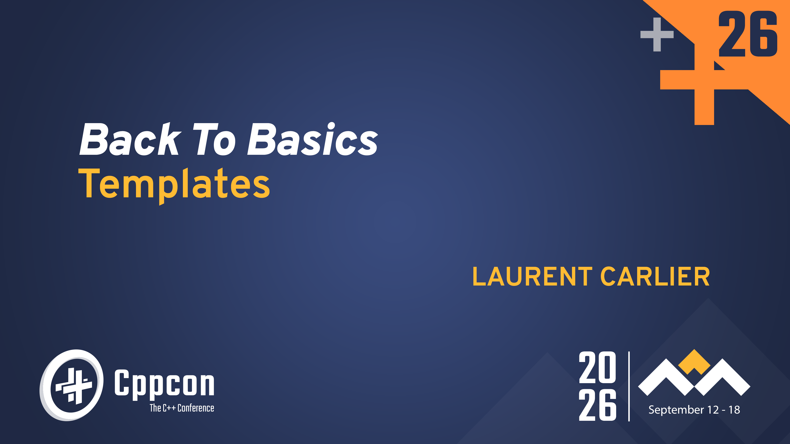
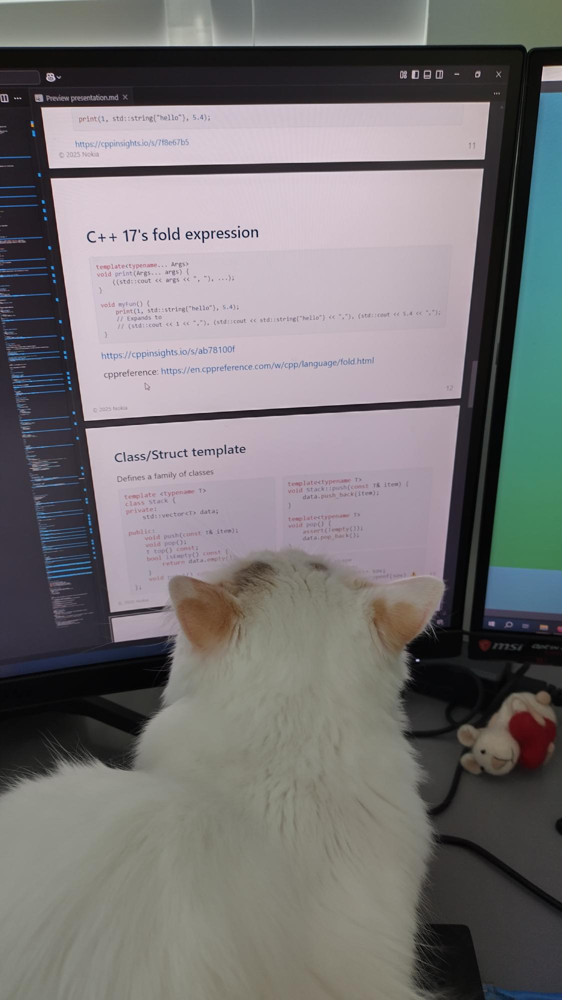
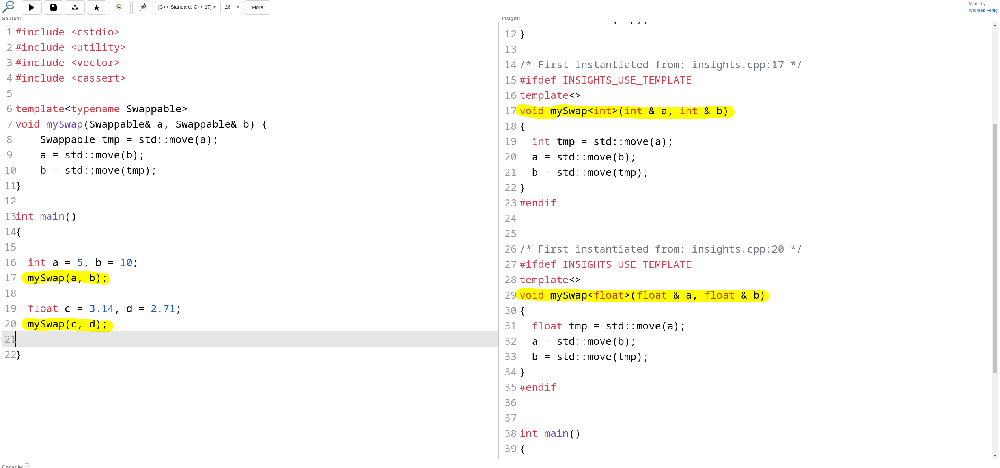
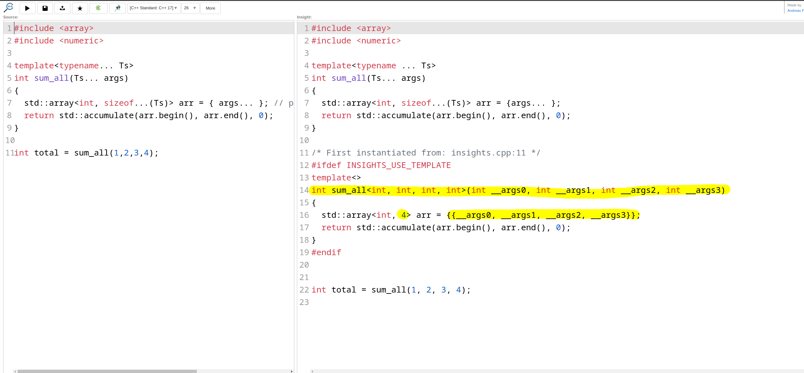
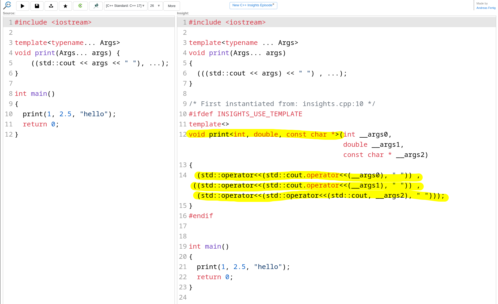

[1:00 — cumulative 1:00]
Good morning / afternoon everyone, and welcome to Back to Basics: Templates.
My name is Laurent Carlier. I write embedded and low-level C++ for a living — drivers, hardware
abstraction layers, the kind of code where every cycle and every byte is visible.
I want to start with a confession: for a long time templates scared me. I used them, I read them,
but I did not feel like I owned them. That changed the day I realised that the handful of features
I actually needed every day fits on a few slides — and that those few features are enough to build
abstractions that are both powerful and free.
That is the whole talk in one sentence: with very simple template features, you can build powerful
and efficient abstractions.
Housekeeping: I will ask the room a few questions along the way — the 🙋 emoji is your cue. Please
play along, it makes this much more fun. Keep questions for the end unless something is truly
unclear; slides and links are at the very end.
Goal of this presentation
Template allows generic programming
Template enables type safety
Template is performant
Going home convinced that templates are powerful yet approachable
Templates doesn't need to be complicated

[1:30 — cumulative 2:30]
Here is what I want you to walk out with. Four things.
(fragment 1) Templates allow generic programming — one piece of source code that serves many
types, without copy-paste and without the pre-processor.
(fragment 2) Templates enable type safety — and this is the part people forget. A template is not
a hole in the type system; it is a way to let the compiler check more things, not fewer. We will
see an example at the end where the compiler refuses to let you write a field into the wrong
hardware register.
(fragment 3) Templates are performant. Everything is resolved at compile time. No vtable, no
indirection, no allocation. At the end of the talk I will show you two functions — one written with
a template abstraction, one written by hand with raw bit twiddling — and they compile to the exact
same assembly. Instruction for instruction.
(fragment 4) And the last one is the real goal: I want you to go home convinced that templates are
powerful yet approachable.
(fragment 5 — the un-learning picture) Because a lot of us carry a mental image of templates as
this monstrous, unreadable, compiler-error-generating machine. Some of that reputation is earned —
by template metaprogramming. But that is not what we are doing today. Today is the 20% of
templates that gives you 95% of the value. So: a bit of un-learning.
Ground rules
Teach by example
Focus on the most common use cases
Warn about common pitfalls
🐰 Avoid getting into the rabbit hole 🐰
What we will cover
Syntax & function templates
Implicit requirements
Template argument deduction
Variadic templates & perfect forwarding
Class templates
3 real-world examples
🐰 Not today: SFINAE, concepts, partial specialization, template metaprogramming 🐰
Why not cover every template
feature?
It has already been done — very well
Nicolai Josuttis, Back To Basics: Templates , CppCon 2022
Today: only the basics needed for the real-world examples at the end
https://youtu.be/HqsEHG0QJXU
[1:30 — cumulative 4:00]
Four ground rules for the next hour.
(1) Teach by example. Almost no standardese. If you want the exact wording of the standard, it is
one cppreference tab away.
(2) Focus on the most common use cases — the things you will actually type this month.
(3) Warn about common pitfalls. Every time I show you something that works, I will also show you
the shape of the bug that lives next door.
(4) And the important one: avoid the rabbit hole. Templates have infinite depth. Every slide today
has a trapdoor I am deliberately not opening.
(agenda fragment) Here is the road map: syntax and function templates, implicit requirements —
which is the single most important concept of this talk — argument deduction, variadic templates
and perfect forwarding, class templates, and then three real-world examples. Roughly: forty
minutes of building blocks, then we put them to work.
(not-today fragment) Explicitly not today: SFINAE, concepts, partial specialization, template
metaprogramming. If you came for enable_if, I am sorry — and also, you're welcome.
(Josuttis fragment) "Why not cover everything?" Because it has already been done, extremely well.
Nicolai Josuttis gave the reference Back To Basics: Templates talk at CppCon 2022. Watch it — link
is on the slide. My talk is deliberately narrower: only the basics we need to build the three
examples at the end. I would rather you leave with three things you can use than thirty you cannot
remember.
Template syntax
A template defines a family of functions , classes , type aliases ,
variables or concepts .
Today we only need the first two.
template< [parameter-list] >
declarationparameter-list can be:
type parameter e.g. int, std::string
non type template parameter (aka NTTP) e.g. enum value, constexpr value
template parameter pack using ellipsis ...
template template parameter e.g. template<typename> class
declaration can be:
a (class member) function
a class/struct
a type alias
[1:00 — cumulative 5:00]
The syntax, in one line: the keyword `template`, angle brackets with a parameter list, then a
declaration. That is it.
Key mental model — say this slowly: a template is not code. A template is a recipe the compiler
uses to generate code. Nothing exists until you instantiate it.
The parameter list can hold four kinds of things. A type parameter — by far the most common, 90% of
what you write. A non-type template parameter, an NTTP: a compile-time *value*, like an integer or
an enum — that is how `std::array` gets its size. A parameter pack with the ellipsis, which
means "zero or more". And a template template parameter, which is a template that takes a template
— we will not use that one today, I just want you to recognise it if you meet it.
And the declaration can be a function, a class, a type alias, a variable, or a concept. Today we
only need the first two: function templates and class templates. Don't memorise this slide — it is
a map, not a test.
Function template
Defines a family of functions
template<typename Swappable>
void mySwap(Swappable& a, Swappable& b) {
Swappable tmp = std::move(a);
a = std::move(b);
b = std::move(tmp);
}💡 Give good name to template parameters
⚠️ The compiler does not produce any code if the template is not
instantiated
⚠️ The definition is usually (but doesn't have
to)
[1:30 — cumulative 6:30]
Our first real template: `mySwap`. Six lines. Read it — it is exactly the swap you would write by
hand, except the type is a parameter.
This single declaration defines a *family* of functions. Not one function: a family. One member per
type you call it with.
(fragment 1) First tip, and it costs nothing: give your template parameters good names. I wrote
`Swappable`, not `T`. The name is free documentation — it tells the reader what the type has to be
able to do. `T` tells them nothing. This matters even more once you have three or four parameters.
(fragment 2) Second — and this surprises people — the compiler produces *no code at all* for a
template that is never instantiated. Put this in a header, never call it, and there is not a single
byte in your binary. You pay only for what you use.
(fragment 3) Third: the definition usually has to be visible in every translation unit that
instantiates it. That is why templates live in headers. The "usually" is deliberate — you can put
the definition in a .cpp and explicitly instantiate it there for a fixed set of types. That is a
real technique for cutting compile times when you know your types up front. Rabbit hole — moving
on.
Function template
Defines a family of functions
template<typename Swappable>
void mySwap(Swappable& a, Swappable& b) {
Swappable tmp = std::move(a);
a = std::move(b);
b = std::move(tmp);
}
int a = 5, b = 10;
mySwap(a, b);
assert(a == 10 && b == 5);float a = 3.14f, b = 2.71f;
mySwap(a, b);
assert(a == 2.71f && b == 3.14f);
⚠️ Calling the function with 2 different types fails
float f = 3.14f;
int i = 42;
mySwap(i, f); // ❌ Does not compile
[1:30 — cumulative 8:00]
Same template on the left, and now we use it.
Call it with two ints — notice I did *not* write `mySwap`. The compiler looked at the
arguments and worked out that `Swappable` is `int`. That is template argument deduction; we will
come back to it properly in a few minutes.
(fragment) Call it with two floats — same source, a second function appears. And I could keep
going: `std::string`, my own `Matrix` class, anything movable.
(fragment — the failure) Now the important one. Two *different* types: an `int` and a `float`.
This does not compile. Why? Look at the signature: there is one parameter, `Swappable`, and it
appears twice. The first argument says "I'm an int", the second says "I'm a float". The compiler
will not pick a winner and it will not silently convert — it gives up and tells you deduction
failed.
And that is *correct behaviour*. Think about what a swap between an int and a float would even
mean. Hold on to this: one parameter appearing twice means "these two must be the same type", and
the compiler enforces it for free. Compare that with a macro, which would happily paste anything in
— we get there in about five minutes.
Function template
Defines a family of functions
⚠️ The compiler generates code for each instantiation.

https://cppinsights.io/s/b05df164
[1:00 — cumulative 9:00]
Let me show you what "a family of functions" actually means, because this is not hand-waving.
This is C++ Insights — a fantastic tool, it runs a Clang front-end and shows you the code the
compiler generated. Link is on the slide, and I encourage you to paste your own templates in there
later; it demystifies a lot.
You can see it right there: from one template, the compiler emitted a separate, complete,
fully-typed `mySwap` for `int` and another one for `float`. Concrete functions, no generics left,
nothing to resolve at run time. The optimiser then treats them like any hand-written function —
which is exactly why templates are fast.
The trade-off — and let's be honest about it — is compile time and potentially code size. Every
instantiation is real work for the compiler and real bytes in the binary. This is why heavily
templated code builds slowly. Worth knowing, rarely worth worrying about at this level.
Function template
How are function templates processed?
template<typename Swappable>
void mySwap(Swappable& a, Swappable& b) {
Swappable tmp = std::move(a);
a = std::move(b);
b = std::move(tmp);
}
int a = 5, b = 10;
mySwap(a, b);
Two-phase name lookup
First, the compiler checks for syntax
Second the template argument is substituted in for the template parameter
⚠️ The code can compile until a function template is called
⚠️ Same for class templates: only the member functions you call are instantiated
https://godbolt.org/z/n7K1PKdrs
[1:30 — cumulative 10:30]
How does the compiler actually process this? The mechanism is called two-phase name lookup, and
knowing it explains a whole class of confusing behaviour.
(fragment) Phase one happens when the compiler *reads* the template, before it knows any types. It
checks syntax and resolves every name that does not depend on the template parameter. Missing
semicolon, unbalanced brace, calling a function that does not exist anywhere — caught here.
Phase two happens at instantiation, when the template argument is substituted in. Only now can the
compiler check the things that depend on the type: does `Swappable` actually have a move
constructor? Does `operator>` exist?
(fragment) Consequence, and this is the one that bites: your code can compile perfectly happily
until the day someone calls the function template. You can ship a broken template. The bug is
dormant, and it wakes up at the call site — which is why template errors point at *your* line and
not at the library's.
(fragment) Same story for class templates, and even more finely grained: only the member functions
you actually *call* get instantiated. A member function with total nonsense in it will sit there
quietly as long as nobody calls it. Godbolt link on the slide proves it.
Practical takeaway: unit-test your templates with every type you claim to support. "It compiles" is
not the same guarantee it is for normal code.
Function template
Implicit requirements
Implicit requirements are the sets of operations and properties that a type must support for the
template to compile
template<typename T>
void mySwap(T& a, T& b) {
T tmp = std::move(a);
a = std::move(b);
b = std::move(tmp);
}What are the implicit requirements for the type T?
🙋♂️🙋♀️
Must be move constructible i.e have a valid T(T&&)
constructor
Must be move assignable i.e have a valid T& operator=(T&&)
assignment operator
💡 C++ 20 formally defines the requirement via the swappable
concept.
💡 Before C++20, document the requirement explicitly using comments.
ℹ️ There are numerous possible implicit requirements
For instance:
T must have a public class member variable T.dataT must have a function member T::fun(int)T must have a nested type T::REGT must have a static function member
👉 The 3 examples at the end of this talk are
built on nothing but implicit requirements 👈
[2:00 — cumulative 12:30]
This is the most important slide of the first half. If you remember one concept from today, make it
this one.
An implicit requirement is the set of operations and properties a type must support for the template
to compile. "Implicit" because it is nowhere in the signature — it is hidden in the body.
(fragment) So: audience question. Here is `mySwap` again. What are the implicit requirements on
`T`? Shout them out.
[Wait. Genuinely wait — count to five. Take two or three answers. Expect "move constructible" and
"move assignable"; if someone says "copyable", that is the perfect wrong-but-close answer — point
out that `std::move` on a type without a move constructor silently falls back to copy.]
(fragment) Two requirements. `T` must be move constructible — line 3. And move assignable — lines
4 and 5. That is the entire contract, and it is written nowhere except in the implementation.
That is the double edge. It is powerful: any type satisfying the contract just works, including
types written years after the template. And it is dangerous: nothing tells your user what the
contract *is* until they violate it and get a wall of errors.
(fragment) In C++20, concepts let you state the contract in the signature — here, the `swappable`
concept. The error message becomes one line instead of forty. Before C++20 — and I know many of you
are on C++14 or C++17 — write it in a comment above the template. Seriously. A three-line comment
saying "T must be move constructible and move assignable" saves the next person an hour.
(fragment — the box) And requirements are not just operators. A type can be required to have a
public data member, a member function with a given signature, a *nested type*, a static member
function. Any of these is a valid contract.
Remember that last line, because it is the bridge to the second half: the three real-world examples
at the end are built on nothing but implicit requirements. No inheritance, no virtual, no concepts.
Just "your type must provide these things".
Before templates: the C macro
Generic code without the language's help
One MAX for every type — the pre-processor only pastes text.
#define MAX(a, b) a > b ? a : b
What does this print? 🤔
std::printf("%d\n", MAX(1, 2) + 3);🙋♂️🙋♀️
The pre-processor expands it to
std::printf("%d\n", 1 > 2 ? 1 : 2 + 3); // prints 5 😱⚠️ A macro has no notion of operator precedence ⚠️
[1:30 — cumulative 14:00]
Before templates, C programmers still needed generic code. The tool they had was the pre-processor.
I want to spend three minutes here, because the contrast is the best possible argument for
templates — and because this code is still in your codebase. I promise.
Here is `MAX`. It looks fine. It is not a function — the pre-processor just pastes text, before the
compiler sees anything.
(fragment) Question for the room: what does this print? `printf("%d", MAX(1, 2) + 3)`.
[Wait for answers. Most people say 5 — because max is 2, plus 3. A few will smell the trap. Let
them argue for a moment.]
(fragment) It prints 5, but not for the reason you think. Look at the expansion: `1 > 2 ? 1 : 2 +
3`. The `+ 3` got absorbed into the *false branch* of the conditional. The condition is false, so
we evaluate `2 + 3` — five. The right answer by accident. Change it to `MAX(2, 1) + 3` and you get
2, not 5.
Why? Because a macro has no notion of operator precedence. It is text substitution. It does not know
what an expression is.
Before templates: the C macro
Parentheses everywhere... still broken
#define MAX(a, b) ((a) > (b) ? (a) : (b))
int i = 10, j = 5;
int m = MAX(i++, j); // expected: m == 10 and i == 11
But i++ is pasted twice
int m = ((i++) > (j) ? (i++) : (j)); // m == 11 and i == 12 😱⚠️ Arguments are evaluated as many times as they appear ⚠️
❌ No type checking: MAX(1u, -1) silently returns 4294967295
❌ Not scoped: ignores namespaces, cannot be a class member
❌ Invisible to the debugger and to tooling
❌ Nothing stops a header from defining min/max for you 😱
[1:30 — cumulative 15:30]
"Fine," you say, "I know that one — parentheses everywhere." Good. Parenthesise every parameter and
the whole body. Precedence bug: fixed.
(fragment) Now call it with `MAX(i++, j)`. You expect `m == 10` and `i == 11`.
(fragment) But `i++` is pasted *twice* — once in the condition, once in the true branch. So `i` is
incremented twice: `m` is 11, `i` is 12. Both wrong, silently.
A macro evaluates its arguments as many times as they appear. Any side effect — increment, a
function call, a volatile read from a hardware register — happens more than once. In embedded code
this is not a style issue, it is a hardware bug.
(fragment — the list) And it gets worse. No type checking: `MAX(1u, -1)` compares an unsigned and a
signed, the `-1` converts to four billion, and the macro cheerfully returns it. The compiler is not
even asked. Not scoped: macros ignore namespaces, cannot be class members, cannot be qualified.
Invisible to the debugger, to your IDE, to static analysers — you cannot step into a macro. And my
favourite: any header can define `min` and `max` for you. Ask anyone who has included `windows.h`
and then tried to call `std::max`.
Five separate categories of problem. Every single one disappears with a template.
Don't write macros, write templates
A generic myMax
template<typename T>
T myMax(T a, T b) {
return a > b ? a : b;
}
int i = 10, j = 5;
myMax(5, 4) + 3; // == 8 👍
auto m = myMax(i++, j); // m == 10, i == 11 👍
myMax(1u, -1); // ❌ does not compile 👍
👍 Precedence is respected
👍 Arguments are evaluated exactly once
👍 The compiler checks the types
👍 Obeys namespaces, can be a class member
👍 Debuggable
[1:00 — cumulative 16:30]
Same idea, four lines, as a template. `myMax`.
Go through the same three calls. `myMax(5, 4) + 3` is 8 — correct, because this is a real function
call and precedence applies normally. `myMax(i++, j)` gives 10 with `i` at 11 — correct, because
arguments to a function are evaluated exactly once. And `myMax(1u, -1)` does not compile — which is
a *feature*. The compiler cannot deduce one `T` from `unsigned` and `int`, so it stops you instead
of handing you four billion.
(fragment) Plus: it obeys namespaces, it can be a class member, it is visible to the debugger and
to tooling. You can set a breakpoint in it.
So here is the first concrete takeaway of the talk, and it is one you can apply on Monday: don't
write function-like macros. Write templates. Cost: the word `template` and a pair of angle
brackets. Benefit: five classes of bug, gone.
Template argument deduction
General
Template argument deduction is the process by which the compiler determines the template arguments
from the function arguments.
For instance
template<typename T>
T myMax(T a, T b) {
return a > b ? a : b;
}
void fun() {
int a = 5, b = 4;
auto c = myMax(a, b);
static_assert(std::is_same_v<decltype(c), int>);
}
Calling myMax(a, b) deduces T = int
[1:00 — cumulative 17:30]
We have been quietly relying on this since slide five, so let's name it. Template argument deduction
is the process by which the compiler works out the template arguments from the *function*
arguments.
This is the feature that makes templates pleasant to use. Without it, every call would need explicit
angle brackets and nobody would bother.
(fragment) Here, `a` and `b` are `int`s, so `T` is deduced as `int`, and the `static_assert`
confirms `c` is an `int`. Note the assert runs at compile time — it costs nothing at run time. It
is a great habit for pinning down what your templates actually do.
You already use this constantly without thinking: every time you write `std::max`, `std::sort`, or a
range-for over a container, deduction is doing the work.
Template argument deduction
What type is deduced?
Another example
template<typename T>
T myMax(T a, T b) {
return a > b ? a : b;
}
void fun() {
auto c = myMax(5.1, 5.2);
}What type is T deduced ?
🙋♂️🙋
[0:30 — cumulative 18:00]
Quick one, keep the pace up. `myMax(5.1, 5.2)` — what is `T`?
[Short pause. Someone will say float. Let them.]
(fragment) `double`. An unsuffixed floating-point literal in C++ is a `double`, never a `float`.
You would need `5.1f`.
Small thing, but it matters on embedded targets where `double` arithmetic may be emulated in
software and cost you a hundred cycles. Deduction gives you exactly what you wrote — no more, no
less. If you wrote the wrong literal, you get the wrong type.
Template argument deduction
When you must say it explicitly
Provide the template argument explicitly float
template<typename T>
T myMax(T a, T b) {
return a > b ? a : b;
}
void fun() {
auto c = myMax<float>(5.1, 5.2);
}
⚠️ Template arguments are never deduced from the return type ⚠️
template<typename T>
T parse(const std::string& text);
int i = parse("42"); // ❌ Does not compile
auto i = parse<int>("42"); // 👍
💡 Remember this: some templates can only be called with explicit
arguments 💡
[1:30 — cumulative 19:30]
If you don't want what deduction gives you, you can override it: write the template argument
explicitly. `myMax<float>(5.1, 5.2)`. Now `T` is `float`, deduction is skipped entirely, and
the `double` literals are converted at the call.
Explicit arguments always win. Deduction only fills in what you did not specify.
(fragment) Now a rule that catches everybody at least once: template arguments are *never* deduced
from the return type. Look at `parse`. Writing `int i = parse("42")` does not compile — the compiler
does not look at what you are assigning to. Deduction works left to right, from the arguments in.
You must write `parse<int>("42")`.
(fragment) And remember this, because it comes back in the second half: some templates can *only*
be called with explicit arguments — when a parameter appears nowhere in the function parameter list,
there is nothing to deduce it from. That is not a limitation, it is a design tool. Both the
variadic `sum_all` in a few slides and the policy-based serializer at the end rely on exactly this.
When the deduced type surprises you
A generic myMax
template<typename T>
T myMax(T a, T b) {
return a > b ? a : b;
}What does the following call return? 🤔
myMax("hello", "world");🙋♂️🙋♀️
The instantiated function is
const char* myMax(const char* a, const char* b) {
return a > b ? a : b;
}We don't know the result 🤷. Pointer comparison
[1:30 — cumulative 21:00]
Deduction is mechanical, and sometimes the mechanics surprise you. My favourite example.
Same `myMax`. What does `myMax("hello", "world")` return?
[Wait. You will hear "world", because w comes after h alphabetically. That is the trap.]
(fragment) The string literals decay to `const char*`, so `T` is deduced as `const char*`, and the
instantiated function compares two *pointers*.
We do not know the result. It depends on where the linker happened to put the two string literals
in the binary. It might be "world", it might be "hello", it might change when you add an unrelated
file to the project. Comparing unrelated pointers with `>` is not even well-defined in the
standard.
And here is the really nasty part: it *compiles*. No warning. The implicit requirement — `T` must
have `operator>` — is satisfied by pointers. Satisfied, but meaningless.
So: implicit requirements tell you what the compiler can check. They cannot tell you whether the
operation *means* the right thing. That is still your job.
When the deduced type surprises you
Fix: Provide a function overload
A non-templated overload function gives a custom implementation for a specific type.
const char* myMax(const char* a, const char* b) {
return std::strcmp(a, b) > 0 ? a : b;
}Now myMax("hello", "world") returns the pointer to "world" 👍
💡 Out of reach for a macro: the pre-processor cannot overload 💡
[1:00 — cumulative 22:00]
The fix is beautifully simple: provide a plain, non-template overload for the type you want to treat
specially.
Nine words of C++: a normal function taking two `const char*` and using `strcmp`. Now
`myMax("hello", "world")` returns a pointer to "world", every time.
Why does this work? Overload resolution prefers an exact non-template match over a template
instantiation. The compiler sees a perfect fit and takes it. No opt-in, no configuration — you just
declare the function and calls start routing to it.
This is the extensibility pattern of the whole talk in miniature: a generic default, plus a
specific override, and the caller's code does not change by a single character.
(fragment) And note — this is completely out of reach for a macro. The pre-processor has no notion
of types, so it cannot overload. One `MAX`, forever.
Function Template Specialization
Why not an explicit specialization? 🤔
Explicit specialization is not considered during overload resolution
template<typename T>
T myMax(T a, T b) {
return a > b ? a : b;
}
template<>
const char* myMax(const char* a, const char *b){
printf("Call specialization\n");
return std::strcmp(a, b) > 0 ? a : b;
}
const char* myMax(const char* a, const char* b) {
printf("Call overload\n");
return std::strcmp(a, b) > 0 ? a : b;
}
int main() {
myMax("a", "b");
return 0;
}
Prints Call overload
[1:30 — cumulative 23:30]
Someone is thinking: "why an overload? C++ has explicit specialization — `template<>` — isn't
that the tool for this?" Fair question. Short answer: no.
(fragment) Explicit specializations do not take part in overload resolution. Overload resolution
happens *first*, between the primary template and any non-template functions. Only *after* a winner
is chosen does the compiler check whether that particular template has a specialization for the
deduced arguments.
Here I have declared both: a specialization *and* an overload, each printing which one ran. Call
`myMax("a", "b")` and it prints "Call overload". The specialization is never even considered — the
non-template overload won the first round.
Practically this means specializations can be silently bypassed, and worse, whether yours is picked
can depend on declaration order. That is a horrible property for a customisation mechanism.
(fragment — the box) The definitive write-up is Herb Sutter's GotW #49, "Why Not Specialize
Function Templates?". The rule of thumb that came out of it: for function templates, overload.
Specialize class templates instead if you really need it.
Moving on — that is the last gotcha. From here it is all building.
Putting templates to work
Generic programming
Iterate over any kind of iterables
template<typename Iterable>
void print(Iterable& c) {
for (const auto& element : c) {
std::cout << element << "\n";
}
}
Works with
Any standard containers (vector, list, set, map, ...)
std::vector<int> v = {1, 2, 3};
print(v);
C++ 20's span and ranges
std::span<int> s = {v};
print(s);
std::vector<int> v = {1, 2, 3, 4, 5};
auto even = v | std::views::filter([](int n) { return n % 2 == 0; });
print(even);
C-style arrays
int arr[] = {1, 2, 3};
print(arr);
Custom types: just add an overload
struct Graph { ... };
void print(Graph& g) { ... }
Graph g;
print(g); // 👍
Extensible without ever touching print 👍
[1:30 — cumulative 25:00]
Now let's put this to work. First payoff: generic programming.
Six lines: `print`, taking anything called `Iterable`, with a range-for inside. The implicit
requirements are exactly two: the type must support `begin`/`end`, and its elements must be
streamable.
That is a tiny contract. Look at what satisfies it.
(fragment) Every standard container — vector, list, set, map, deque, array. One function.
(fragment) C++20 `span` — which did not exist when you wrote `print`. And ranges: a filtered view
is a lazily-evaluated pipeline, nothing like a vector in memory, and `print` does not care. It has
`begin` and `end`. Done.
(fragment) Even C-style arrays work — range-for handles raw arrays.
(fragment) And your own types. Either give your `Graph` begin/end and it satisfies the existing
contract, or drop in an overload as we just saw.
The headline: you extend this without ever touching `print`. No base class to inherit, no interface
to implement, no registration. Contrast with a runtime-polymorphic design where every type must
derive from your `Printable` base — which you cannot do for `std::vector`, and cannot do for types
from a third-party library. Templates are *non-intrusive*. That is their superpower.
Putting templates to work
Static polymorphism
Polymorphic behaviour between unrelated types
template<typename T>
constexpr int legs(T& ll) { return ll.legs(); }
struct Cow { // not in any class hierarchy
constexpr int legs() { return 4; }
};
struct Duck { // not in any class hierarchy
constexpr int legs() { return 2; }
};
int main()
{
Cow c;
Duck d;
// resolved at compile time, no vtable, no common base
static_assert(legs(c) == 4);
static_assert(legs(d) == 2);
}💡 Polymorphism without inheritance — the only contract is
.legs() 💡
Example from Bjarne Stroustrup (apologies for the artificial example)
[1:30 — cumulative 26:30]
Second payoff, and it is the one that changes how you design: static polymorphism.
This example is Bjarne's — and yes, it is artificial, apologies. It makes the point in twenty lines.
(line 1-2) `legs` is a template calling `.legs()` on whatever you hand it. Note `constexpr`.
(lines 4-10) `Cow` and `Duck`. Read the comments: neither is in any class hierarchy. No common
base. They do not know about each other, and neither knows about `legs`. They are completely
unrelated types.
(lines 12-19) And yet `legs(c)` gives 4 and `legs(d)` gives 2 — polymorphic behaviour. That is
polymorphism by definition: same call, different behaviour depending on type.
Look at *how* it is checked though — `static_assert`. This is all resolved at compile time. There is
no vtable, no vptr in `Cow`, no indirect call, nothing to devirtualize. `sizeof(Cow)` is 1. In the
final binary these calls are literally the constants 4 and 2.
(fragment) So: polymorphism without inheritance. The only contract is "has a member function
`legs()`" — an implicit requirement again.
When should you choose this over virtual functions? When the set of types is known at compile time.
If you need a heterogeneous container or a plugin loaded at run time, you still want virtual —
templates are not a replacement for everything. But in embedded and performance-critical code, the
set usually *is* known at compile time, and then you are paying for dynamic dispatch you never use.
Variadic templates
A variable number of template parameters
The ellipsis (...) says which parameter is a pack , and where it expands.
template<typename T, typename... Ts>
int sum_all(Ts... args)
{
std::array<T, sizeof...(Ts)> arr = { args... }; // pack expansion fills the array
return std::accumulate(arr.begin(), arr.end(), 0);
}
auto total = sum_all<int>(1, 2, 3, 4); // total == 10
ℹ️ sizeof...(Ts) gives the number of elements in the pack
💡 T appears in no function parameter → it can only be given
explicitly 💡
[1:30 — cumulative 28:00]
So far every template took a fixed number of parameters. Variadic templates lift that: a variable
number.
The whole feature is one token: the ellipsis, three dots. It has exactly two jobs, and once you see
them you can read any variadic code.
Job one — to the *left* of a name, in a declaration: "this is a pack". `typename... Ts` declares a
pack of types. `Ts... args` declares a pack of function arguments.
Job two — to the *right* of an expression: "expand the pack here". `args...` in the braced
initialiser becomes `arg0, arg1, arg2, arg3`.
Declare on the left, expand on the right. That is genuinely the whole rule.
(fragment) So `sum_all<int>(1, 2, 3, 4)` fills a four-element array and accumulates it — ten.
(fragment) `sizeof...(Ts)` — with the dots — gives the *number* of elements in the pack. It is a
compile-time constant, which is why it can be the array size.
(fragment) And notice: `T` appears nowhere in the function parameters, so there is nothing to deduce
it from. Remember the rule from earlier — that is why you must write `sum_all<int>`
explicitly. Deliberate design: the caller picks the accumulator type.
Variadic templates
sum_all under the hood
What the pack expansion really generates

https://cppinsights.io/s/5d262841
[1:00 — cumulative 29:00]
Back to C++ Insights, because "pack expansion" sounds magical until you see it.
There is no magic. The compiler generated a completely ordinary function taking four `int`s by
value, and the pack expansion became a plain braced initialiser list: `{arg1, arg2, arg3, arg4}`.
The dots are gone. It is code you could have written by hand.
That is the mental model I want you to keep for the rest of the talk: a pack expansion is
compile-time copy-paste, done by the compiler, with full type checking. Whenever you see `...` and
feel lost, ask "what does this look like for exactly three arguments?" and write it out. It always
works.
And call it out: if I pass five arguments instead of four, a *second* function is generated. Same
trade-off as before — one instantiation per distinct argument list.
Variadic templates
C++17's fold expressions
A fold repeats one expression for each element of the pack.
template<typename... Args>
void print(Args... args) {
((std::cout << args << " "), ...);
}
Calling print(1, 2.5, "hello") prints 1 2.5 hello
💡 Before C++17 you peeled the pack off one argument at a time, with a recursive
overload and a non-template base case 💡
[1:30 — cumulative 30:30]
Packing into an array works, but usually you want to *do something* with each element. C++17 gave
us fold expressions, and they are the single best quality-of-life improvement in this area.
A fold repeats one expression for each element of the pack. Look at the body: an expression, a
comma, and the dots, all wrapped in parentheses — the parentheses are mandatory.
I am using the comma operator here, which is the "just do this for each element" fold. Read it as:
stream out `args`, then a space; repeat for every element.
(fragment) `print(1, 2.5, "hello")` prints `1 2.5 hello`. Three different types, one function, no
recursion.
Other operators fold too — `(args + ...)` sums, `(args && ...)` ANDs. We will use the
`&&` fold at the very end of the talk to type-check hardware register fields at compile
time, so keep it in mind.
(fragment) And a word for anyone maintaining pre-C++17 code: you used to write this as a recursive
template that peeled one argument off the front, plus a non-template base case to stop the
recursion. Two functions, awkward to read, and every recursion level was another instantiation. If
you have that pattern in your codebase, folds are a very satisfying refactor.
Variadic templates
Under the hood: one call per pack element

https://cppinsights.io/s/16760da2
https://en.cppreference.com/cpp/language/fold
[0:30 — cumulative 31:00]
One more look under the hood, quickly — same lesson, so don't linger.
The fold expanded into three separate, ordinary stream calls, one per pack element, each with the
correct type already resolved. No loop, no recursion, no run-time dispatch. Straight-line code the
optimiser can chew through.
The cppreference link at the bottom lists all four fold forms — unary/binary, left/right. Bookmark
it; nobody remembers which is which, including me.
Perfect forwarding
Passing arguments on to another function while preserving their value category (lvalue or rvalue).
template<typename Args>
void relay(Args&& args) {
consume(std::forward<Args>(args));
}
Textbook example: std::vector::emplace_back
template<typename... Args>
reference emplace_back(Args&&... args);
push_back builds a temporary, then moves it
users.push_back(User{2, "Bob"});
emplace_back constructs in place
users.emplace_back(2, "Bob");
https://godbolt.org/z/334GsGa4n
[1:30 — cumulative 32:30]
One more building block and then we build things. Perfect forwarding.
The problem: you have a wrapper that takes arguments and passes them to another function. If you do
it naively you lose information — specifically the *value category*. A temporary that arrived as an
rvalue, ready to be moved from, becomes a named lvalue inside your function and gets copied instead.
You silently turned a move into a copy.
`std::forward` fixes that. Take the parameter as `T&&` where `T` is deduced, and forward it.
If the caller passed an lvalue, `consume` sees an lvalue; if an rvalue, `consume` sees an rvalue.
Perfectly preserved — hence the name.
(fragment) The textbook example is `emplace_back`. Its signature is a variadic pack of forwarding
references — everything we have just learned, in one line.
Compare the two calls. `push_back(User{2, "Bob"})` constructs a temporary `User`, then moves it into
the vector, then destroys the temporary. `emplace_back(2, "Bob")` forwards the raw arguments all the
way down and constructs the `User` *directly in the vector's storage*. One object instead of two. No
move, no destructor call.
Godbolt link on the slide shows the difference in the generated code. For a type with a cheap move
this barely matters; for anything holding a buffer, it is real.
And note *why* this is possible: without variadic templates plus forwarding references, you would
need one overload per constructor arity. Two simple features combining into something you could not
build otherwise.
Perfect forwarding
The std::forward Catch
std::forward only works on a forwarding reference : a T&&
where T is deduced by this very function
template <typename T>
void relay(T&& arg) {
consume(std::forward<T>(arg));
}
⚠️ These are not forwarding references ⚠️
void relay(std::vector<int>&& arg); // fixed type
template<typename T>
void relay(const T&& arg); // const rvalue
⚠️ Using arg again after forwarding it → moved-from bug
⚠️ std::move instead of std::forward → moves lvalues
unconditionally
Forwarding references are also called universal references : Scott
Meyers
[1:30 — cumulative 34:00]
Here is the catch, and it is the number one mistake people make with forwarding.
`std::forward` only does its job on a genuine *forwarding reference*. And a forwarding reference is
very precisely defined: a `T&&` where `T` is a template parameter deduced *by this very
function*. Both halves matter — I have highlighted them.
(fragment) These are *not* forwarding references, even though they have two ampersands. The first
takes a fixed type — that is a plain rvalue reference; it only binds to rvalues, nothing is deduced.
The second is `const T&&` — the `const` disqualifies it. The pattern has to be exactly
`T&&`.
(fragment) Two more traps. One: after you forward an argument, treat it as moved-from. Using it
again is a bug — and a quiet one, because a moved-from object is valid, just unspecified. Two: don't
reach for `std::move` instead of `std::forward` here. `move` casts unconditionally, so it will steal
from a caller's lvalue that they still intend to use. `forward` moves only when the caller gave you
an rvalue.
Rule of thumb: `std::move` on a concrete rvalue reference, `std::forward` on a forwarding reference.
Never cross them.
(fragment) Terminology note: Scott Meyers coined "universal reference" before the standard settled
on "forwarding reference". Same thing, you will see both.
Class/struct template
Defines a family of classes
A class template describes one class blueprint that the compiler instantiates for each type.
template<typename T>
class Stack {
private:
std::vector<T> data;
public:
void pop() { data.pop_back(); }
const T& top() const { return data.back(); }
bool empty() const { return data.empty(); }
std::size_t size() const { return data.size(); }
template <typename... U>
void emplace(U&&... args) { data.emplace_back(std::forward<U>(args)...); }
};
Stack<int> intStack;
Stack<float> floatStack;
Stack<int> and Stack<float>
are different
types
Because Stack<int> and Stack<float> are types,
they can be given as template parameter values
[1:30 — cumulative 35:30]
Last building block: class templates. Everything you know about function templates carries over.
(lines 1-2) `template<typename T>` then `class Stack`. The blueprint.
(lines 3-4) `T` is usable anywhere inside — here as the element type of the underlying vector.
(lines 5-12) Ordinary member functions. And note lines 11-12: a member function template *inside* a
class template, with its own pack `U`, doing perfect forwarding into `emplace_back`. That is
everything from the last four slides combined, and it is the real signature shape you find in the
standard library.
(lines 15-16) Instantiate with `int` and with `float`.
(fragment) And here is the thing to internalise: `Stack<int>` and `Stack<float>` are
different, unrelated *types*. Not two instances of one type — two types. You cannot assign one to
the other. They have no common base class.
(fragment) And because they are types, they can themselves be used as template arguments. That is
how you get `std::vector<std::vector<int>>` — and it is the mechanism behind CRTP, which
is two slides away. Types in, types out. Templates compose.
Perfect forwarding
The std::forward Catch reloaded
⚠️ Not all T&& are forwarding references
template <typename T> // T deduced HERE, at instantiation
class Stack {
// ... other member functions ...
// args looks like a forwarding reference but T is already fixed
void emplace(T&&... args) { data.emplace_back(std::forward<T>(args)...); }
};
Example of instantiation: Stack<int> s;
struct Stack {
// ... other member functions ...
// ⚠️ Only accept rvalues references of type int
void emplace(int&&... args) { data.emplace_back(std::forward<int>(args)...); }
};
Fix: make emplace
templated
template <typename T>
struct Stack {
// ... other member functions ...
template <typename U>
void emplace(U&& arg) {
consume(std::forward<U>(arg));
}
};
[1:30 — cumulative 37:00]
Now that we have class templates, I can show you the forwarding trap in its most common real-world
form — because this one I have genuinely shipped.
Look at `emplace`. It takes `T&&`. There is a `typename T` right above it. It looks exactly
like a forwarding reference. It is not.
Why? Because `T` is deduced at *class* instantiation — when you write `Stack<int>` — not by
the member function. By the time anyone calls `emplace`, `T` is already fixed. And the rule says:
deduced *by this very function*.
(fragment) Here is what the compiler actually generates for `Stack<int>`. There it is in black
and white: `void emplace(int&&...)`. A plain rvalue reference to `int`. Pass it an lvalue
`int` and it does not compile. And `std::forward<int>` is just an unconditional move — you have
written `std::move` with extra steps.
The symptom in the wild is a puzzling compile error: "why does my container reject a perfectly good
variable?"
(fragment — the fix box) The fix is one extra line: give the member function *its own* template
parameter, `U`. Now `U` is deduced at the call, `U&&` is a real forwarding reference, and
`std::forward<U>` behaves. Compare this with the `Stack` two slides ago — that one already had
it right, with `typename... U`.
So the checklist when you see `T&&`: find where `T` is deduced. Same function — forwarding
reference. Anywhere else — plain rvalue reference.
Class/struct template
Curiously Recurring Template Pattern (CRTP)
Since a template argument can be a type, a class
can pass itself
template <typename CHILD>
struct Base {
void greet() {
static_cast<CHILD*>(this)->hello(); // Base knows the derived type
}
};
struct Derived : Base<Derived> { // pass yourself as the argument
void hello() { std::puts("hello"); }
};
Derived d;
d.greet(); // prints "hello", no virtual call💡 Static polymorphism, resolved at compile
time 💡
ℹ️ The base class knows the type CHILD of the class deriving from it
[1:30 — cumulative 38:30]
It is very important to say that the base class knows the type of the class deriving from it.
Last pattern before the examples: CRTP — the Curiously Recurring Template Pattern. Terrible name,
great pattern. It falls straight out of what we just said: a template argument can be a type, so a
class can pass *itself* as the argument to the base it derives from.
(lines 1-2) `Base` takes a type parameter I have named `CHILD`.
(lines 3-5) And inside, `Base` casts `this` to `CHILD*` and calls a member function on it. Pause
here. The base class is calling into the derived class — and it knows the *exact static type* of the
derived class.
(lines 8-10) The recurring bit: `struct Derived : Base<Derived>`. Derived passes itself.
First time you see it, it looks circular and illegal. It is not — at the point of the base-clause
the compiler only needs the *name* `Derived`, not its definition.
(lines 12-13) Call `d.greet()` — prints "hello". No virtual call. No vtable. Nothing to devirtualize
because there was never an indirection. The compiler can inline straight through.
(fragment) This is static polymorphism with an inheritance *shape*: the base provides shared
behaviour, the derived class provides the specifics, and it is all resolved at compile time.
(fragment) Say the key line again: the base class knows the type of the class deriving from it.
That one fact is what makes the third example — the hardware register abstraction — possible. Keep
it warm; we use it in about ten minutes.
Let's see templates in action
🚀🚀🚀🚀🚀🚀🚀
[0:30 — cumulative 39:00]
That is the entire toolbox. Let me list it, because it is shorter than you think: function
templates, implicit requirements, argument deduction, variadic packs, fold expressions, perfect
forwarding, class templates, CRTP. Eight ideas. No SFINAE, no concepts, no metaprogramming.
Now I want to convince you that those eight ideas are enough to build things that are genuinely
useful — not toy examples. Three of them, all from real production code:
One: a serializer that emits JSON or YAML with zero inheritance. Two: a hardware abstraction layer
that decouples bank-swapping policy from register access. Three: type-safe hardware register
access that compiles down to the exact same assembly as hand-written bit twiddling.
Watch for the same few features reappearing in every one. That repetition is the point of the talk.
[Timing check: you want to be at roughly 39 minutes here. If you are past 43, skip the fragment
build-ups on the requirements slides and go straight to the code.]
Generic serializer and policy-based design
Design a dump_object function to serialize an object into different formats (e.g., JSON, YAML)
It should use policy classes (sinks) to determine the output format
No inheritance required
Easy to extend with new sinks without modifying the function itself
[0:30 — cumulative 39:30]
Example one: a generic serializer using policy-based design. Go through these fast — it is just the
requirements.
We want a `dump_object` function that serializes an object into different formats — JSON, YAML,
maybe a binary protocol later.
The output format is chosen by a *policy class* — a sink.
No inheritance. No abstract base `Serializer`, no virtual `write_field`.
And adding a new format must not require touching `dump_object`.
If you have written this with an abstract base class before — and most of us have — keep that design
in your head for comparison over the next slide.
Generic serializer and policy-based design
template <typename Sink>
void dump_object(const Object& d)
{
Sink::begin_object("object");
Sink::field("id", d.id());
Sink::field("name", d.name());
Sink::end_object();
}
struct JsonSink {
static void begin_object(std::string_view n) {
std::printf("\"%s\": {\n", n.data());
}
static void field(std::string_view k, int v) {
std::printf(" \"%s\": %d,\n", k.data(), v);
}
static void field(std::string_view k, std::string_view v) {
std::printf(" \"%s\": \"%s\",\n", k.data(), v.data());
}
static void end_object() { std::printf("}\n"); }
};
struct YamlSink {
static void begin_object(std::string_view n) {
std::printf("%s:\n", n.data());
}
static void field(std::string_view k, int v) {
std::printf(" %s: %d\n", k.data(), v);
}
static void field(std::string_view k, std::string_view v) {
std::printf(" %s: %s\n", k.data(), v.data());
}
static void end_object() {}
};
Main function
int main() {
Object apple{1, "apple"};
std::printf("---------JSON-----------\n");
dump_object<JsonSink>(apple);
std::printf("---------YAML-----------\n");
dump_object<YamlSink>(apple);
}https://godbolt.org/z/crqP67bTW
Output:
---------JSON-----------
"object": {
"id": 1,
"name": "apple",
}
---------YAML-----------
object:
id: 1
name: "apple"
[1:30 — cumulative 41:00]
Here is the whole thing. Eight lines at the top.
`dump_object` takes a `Sink` as a template parameter and calls static functions on it:
`begin_object`, `field`, `end_object`. That is all. `Sink` is a *type*, not an object — there is no
parameter, nothing is passed at run time.
And notice — same rule as before — `Sink` appears in no function parameter, so it must be given
explicitly at the call site. Deliberate.
The implicit requirements are: a static `begin_object`, a static `field` for each value type, a
static `end_object`.
(fragment — JsonSink) Here is a sink that satisfies them, emitting JSON. Plain struct, static
members, no base class, no virtual.
(fragment — YamlSink) And here is YAML. Note `end_object` is *empty* — YAML has no closing brace.
With a virtual interface you would still pay for that call. Here it inlines to literally nothing.
(fragment — main + output) And main: same object, two formats, two lines. The output is on the
right. Godbolt link if you want to poke at it.
Step back and count what we did *not* need. No base class — so a sink can be a third-party type you
cannot modify. No virtual — so everything inlines; on `-O2` this compiles to a sequence of `printf`
calls with no dispatch at all. No object — no lifetime, no allocation, nothing to pass around.
And adding a new format is: write a struct with four static functions. `dump_object` never changes.
That is the open-closed principle, delivered by a template parameter.
Generic abstraction layer
Register bank manager
2 set of registers bank exists: Active and Standby
Driver writes the standby bank using write(...)
The parameters to writes must not be fixed
Driver calls commit() to swap the active and standby banks
Bank-swap policy is decoupled from register access
The client code is unaware of the active bank
[1:00 — cumulative 42:00]
Example two, straight out of embedded work: a register bank manager.
Quick domain context for the non-embedded folks. A lot of hardware has two sets of configuration
registers: an *active* bank the hardware is currently using, and a *standby* bank you can safely
write to. When you are happy with the standby values, you commit, and the hardware atomically swaps
banks. This is how you reconfigure a peripheral without glitching it mid-operation.
So the requirements. Two banks exist. The driver writes to the standby bank. The parameters to
`write` must *not* be fixed — every peripheral has a different register layout, and I want one
manager for all of them. A `commit` swaps the banks.
And the two design goals: bank-swap policy decoupled from register access — the peripheral driver
should not implement the swap logic over and over. And the client code should be unaware of which
bank is active. That is the bug this eliminates — in my experience the number one source of
"sometimes the config does not apply" bugs is someone writing to the wrong bank index.
Generic abstraction layer
Register bank manager
Client code
int main()
{
ActiveStandbyBank<MotorConfigHal> mgr(MotorConfigHal{});
// Write to the current standby bank i.e bank 0
if(!mgr.write("speed_rpm", 1500)) {
std::cerr << "Cannot write speed_rpm\n";
}
if(!mgr.write("torque_limit", 80)) {
std::cerr << "Cannot write torque_limit\n";
}
mgr.commit();
// Now writing to bank 1 (the new standby bank)
if(!mgr.write("speed_rpm", 1000)) {
std::cerr << "Cannot write speed_rpm\n";
}
}HAL implementation
class MotorConfigHal
{
private:
struct Config { uint16_t speed_rpm = 0;
uint16_t torque_limit = 0; };
Config m_banks[2]{};
public:
bool write(uint8_t bank_id, std::string_view field, uint16_t value)
{
if (field == "speed_rpm") {
m_banks[bank_id].speed_rpm = value;
return true;
} else if (field == "torque_limit") {
m_banks[bank_id].torque_limit = value;
return true;
}
return false;
}
void commit(uint8_t bank_id)
{
// action to commit the bank
}
};
[1:30 — cumulative 43:30]
I am showing you the two *ends* first — what the user writes and what the hardware author writes —
and the machinery in the middle on the next slide.
Client code, top. (line 3) Create an `ActiveStandbyBank` wrapping a `MotorConfigHal`. (lines 5-11)
Write two fields by name. Look at what is *missing*: no bank index anywhere. (line 13) Commit.
(lines 15-18) Write again — and this now goes to the other bank, automatically. The client never
knew, and cannot get it wrong.
Also note the return value is propagated — `write` returns a `bool` and we check it. Hold that
thought, it matters in a second.
HAL implementation, bottom. (line 1) A completely plain class. No base class, no virtual, no
`#include` of the manager. It does not know `ActiveStandbyBank` exists.
(lines 3-6) Its own `Config` struct and an array of two banks. (line 8) And here is the contract:
`write` takes a `bank_id` as its *first* parameter, then whatever else this particular peripheral
needs — here a field name and a value. (lines 9-18) The body is boring hardware code. (lines 20-23)
And `commit` likewise takes a `bank_id` first.
So the entire implicit requirement is: "provide `write` and `commit` whose first parameter is a bank
id". Everything after that is yours. A different peripheral could take a register offset and a
32-bit value, or three arguments, or none.
That flexibility is exactly what an abstract base class cannot give you — a virtual function has one
fixed signature.
Generic abstraction layer
Register bank manager
ActiveStandbyBank implementation
template <typename Hal>
class ActiveStandbyBank
{
private:
Hal m_hal;
uint8_t m_active_id = 0;
public:
explicit ActiveStandbyBank(Hal hal)
: m_hal(std::move(hal)){}
uint8_t active_id() const { return m_active_id; }
uint8_t standby_id() const { return (m_active_id + 1) % 2; }
template <typename... Args>
decltype(auto) write(Args&&... args)
{
return m_hal.write(standby_id(), std::forward<Args>(args)...);
}
template <typename... Args>
decltype(auto) commit(Args&&... args)
{
const auto current_standby_id = standby_id();
m_active_id = current_standby_id;
return m_hal.commit(current_standby_id, std::forward<Args>(args)...);
}
};https://godbolt.org/z/zd5EG59P4
[1:30 — cumulative 45:00]
And here is the machinery. Twenty-six lines, and it works for *any* HAL that satisfies the
contract.
(lines 1-2) A class template over `Hal`.
(lines 4-6) It owns the HAL by value — no pointer, no indirection, and the compiler can see right
through it — plus one byte of state: which bank is active.
(lines 8-12) Constructor, and the trivial bank arithmetic. This is the policy, written once.
(lines 14-18) `write`. This is the interesting part. A variadic pack of forwarding references —
everything from the middle of the talk. It injects `standby_id()` as the first argument and perfectly
forwards everything else through to the HAL. That is how the signature stays unfixed: the wrapper
never names the peripheral's argument types, it just passes them along.
And `decltype(auto)` as the return type — highlighted. Why not plain `auto`? Because `auto` strips
references and const. If the HAL returns a `uint32_t&` into a register cache, `auto` would
silently copy it. `decltype(auto)` propagates the return type *exactly*. It is the return-value
counterpart of perfect forwarding — perfect returning.
(lines 20-26) `commit` is the same shape, plus the policy: capture the standby id, make it active,
then tell the HAL to commit. Note it grabs `standby_id()` into a local *before* flipping
`m_active_id` — order matters, and it is written in exactly one place instead of in every driver.
So: total coupling between the two files is one implicit requirement. No header shared, no interface
inherited, and zero run-time overhead — after inlining, `mgr.write(...)` *is* `hal.write(0, ...)`.
Godbolt link proves it.
Flexible and safe register accesses
Concept
Hardware is programmed through registers
Each register has fields of different sizes
Modifying a field is a generic read-modify-write (RMW) algorithmclear the field's bits, set the new value, write it back
For instance: ARM PL011 UART has a register called UARTLCR_H
Bits
Name
15:8
Reserved
7
SPS - Stick parity select
6:5
WLEN - Word length
4
FEN - Enable FIFOs
Bits
Name
3
STP2 - Two stop bits select
2
EPS - Even parity select
1
PEN - Parity enable
0
BRK - Send break
[1:00 — cumulative 46:00]
RMW uses bitshift and bitwise operations to manipulate specific fields within a register.
Third and final example — my favourite, because it delivers all three promises from slide two at
once: generic, type safe, and provably zero cost.
The domain, briefly. Hardware is programmed through registers. A register is typically 32 bits, and
those bits are carved into *fields* of different widths. To change one field you cannot just write
the register — you would clobber the neighbours. You do a read-modify-write: read the current value,
mask out the field's bits, OR in the new value shifted into position, write it back.
That algorithm is identical for every field of every register on every chip. Only the offset and the
width change. That is a screaming candidate for a generic abstraction.
Concrete example: the ARM PL011 UART's UARTLCR_H register. Look at the tables — WLEN is two bits at
offset 5, FEN is one bit at offset 4, PEN is one bit at offset 1. Different sizes, different
positions.
And how is this normally written? Raw macros and hand-computed hex masks. Which means: nothing stops
you using a mask from a *different* register. I have shipped that bug. It cost me two days with an
oscilloscope.
Flexible and safe register accesses
Goal
Provide a Register::write(...) function to write the fields
Multiple fields can be written at once
Order of fields does not matter
Type safe
Client code
UARTLCR_H lcrh{registerAddress};
lcrh.write(
// 8 data bits
UARTLCR_H::WLEN{0b11},
// enable FIFOs
UARTLCR_H::FEN{0b1},
// no parity
UARTLCR_H::PEN{0b0}
);UARTLCR_H lcrh{registerAddress};
lcrh.write(
// enable FIFOs
UARTLCR_H::FEN{0b1},
// no parity
UARTLCR_H::PEN{0b0},
// 8 data bits
UARTLCR_H::WLEN{0b11}
);
[1:00 — cumulative 47:00]
Here is what I want the API to look like. Requirements first, then the client code.
One `write` function. It must accept multiple fields at once — one read-modify-write cycle for the
whole update, which for hardware is not just faster, it is *correct*: the register is never in a
half-configured state. The order of the fields must not matter — they are named, not positional. And
it must be type safe.
(fragment — left) So the client writes this. Each field is a small named object carrying its value:
`WLEN{0b11}` for 8 data bits, `FEN{1}` to enable FIFOs, `PEN{0}` for no parity. It reads like the
datasheet. No shifts, no masks, no hex constant you have to trust.
(fragment — right) And the same three fields in a different order does exactly the same thing.
Now — the type safety claim. What I want is for `UARTLCR_H::WLEN` and, say, `UARTCR::WLEN` to be
different types, so that passing the wrong one is a *compile error*, not a silent corruption of a
neighbouring field. That is the day-two-with-an-oscilloscope bug, and I want the compiler to catch
it.
Let's build it. Two slides.
Flexible and safe register accesses
UARTLCR_H register definition
// Use CRTP to give the parent class the type of the register it abstracts
struct UARTLCR_H : public Register<UARTLCR_H> {
UARTLCR_H(volatile uint32_t* regAddr):Register{regAddr} {}
struct WLEN {
using REG = UARTLCR_H;
static constexpr uint32_t FIELD_OFFSET = 5;
static constexpr uint32_t FIELD_SIZE = 2;
static constexpr uint32_t FIELD_MASK = ((1 << FIELD_SIZE) - 1) << FIELD_OFFSET;
uint32_t value;
WLEN(uint32_t value):value{value} {}
};
struct PEN {
using REG = UARTLCR_H;
static constexpr uint32_t FIELD_OFFSET = 1;
static constexpr uint32_t FIELD_SIZE = 1;
static constexpr uint32_t FIELD_MASK = ((1u << FIELD_SIZE) - 1) << FIELD_OFFSET;
uint32_t value;
PEN(uint32_t value):value{value} {}
};
// Other fields implementation...
};ℹ️ Each sub-structure implements the implicit requirements of the register
abstraction
[1:00 — cumulative 48:00]
It is very important to say each field knows the type of the register they belong to.
This is the register *definition* — the part a hardware vendor or a code generator writes once per
chip.
(lines 1-2) There is CRTP again: `UARTLCR_H` derives from `Register<UARTLCR_H>`, passing
itself. So the base knows exactly which register it is abstracting. Remember that from ten minutes
ago.
(line 3) Constructor takes the memory-mapped address.
(lines 5-12) And here is a field. `WLEN` is a nested struct, and look at what it carries. (line 6)
`using REG = UARTLCR_H` — a nested *type alias* saying "I belong to this register". This is the type
safety mechanism, and I will use it on the next slide. (lines 7-9) Three `constexpr` values: the
offset, the size, and the mask computed from them — computed by the compiler, from the datasheet
numbers, so there is no hand-written hex to get wrong. (lines 10-11) And the runtime value.
(lines 14-21) `PEN` is the same shape with different numbers. Boilerplate, and honestly in
production this is generated from the vendor's SVD file.
(fragment) The point: each nested struct satisfies the implicit requirements of the abstraction — a
nested type `REG`, three static constexpr values, and a `value` member. That is the contract. And
notice it includes a *nested type* — remember I flagged that back on the implicit requirements
slide. This is where it pays off.
Flexible and safe register accesses
Register abstraction implementation
template<typename CHILD>
class Register{
private:
volatile uint32_t* value; // Points to the actual memory-mapped register
public:
Register(volatile uint32_t* regAddr):value{regAddr}
{}
template <typename ...FIELD>
void write(FIELD... field)
{
static_assert((std::is_same_v<typename FIELD::REG, CHILD> && ...),
"Using field from the wrong register");
uint32_t curVal = *value; // Read value
([&]
{
curVal &= ~field.FIELD_MASK; // Clear the field
curVal |= (field.value << field.FIELD_OFFSET) & field.FIELD_MASK; // Set the field
}(), ...);
*value = curVal; // Write back value
}
};
👍Fields order doesn't matter
💡 static_assert + <type_traits> ensure fields from the right register are used 💡
ℹ️ The lambda is declared and directly invoked for each field
ℹ️ The fold expression repeats the lambda for each field
[1:30 — cumulative 49:30]
And here is the whole abstraction. Twenty-one lines. This is the payoff slide — take it slowly.
(lines 1-2) CRTP base, parameterised on `CHILD` — the register type.
(lines 3-7) One member: a pointer to the memory-mapped register. `volatile`, because the hardware
can change it underneath us and the compiler must not cache or reorder these accesses.
(lines 8-9) `write` takes a variadic pack of fields. That is how you get "any number, any order".
(lines 11-12) And this is my favourite line in the talk. A `static_assert` with a fold over
`&&`: for *every* field in the pack, assert that `FIELD::REG` — the register the field says
it belongs to — is the same type as `CHILD`, the register we are writing to. Pass a field from the
wrong register and you get a clean compile error saying "Using field from the wrong register".
That is a whole class of hardware bug, moved from an oscilloscope at 2am to a compiler message. And
it is three features you already know, combined: a nested type, a fold expression, and a type trait.
(lines 14-19) Then the read-modify-write. Read once. Then a lambda that clears and sets one field —
declared and immediately invoked — folded over the pack, so it runs once per field. Then write back
once. One read, one write, however many fields.
(fragment) Order doesn't matter — each field carries its own offset and mask, so they are
independent.
(fragment) `static_assert` plus `<type_traits>` gives us the type safety, at zero run-time
cost.
(fragment) And the mechanism, if the syntax is new: the lambda is defined and called on the spot,
and the fold repeats it for each field. If that looks alien, remember the C++ Insights trick — write
out what it means for three fields.
Flexible and safe register accesses
What does all of this cost?
The abstraction executes a lambda for each field...
uint32_t testValueAbstraction() {
uint32_t v{0};
UARTLCR_H lcrh{&v};
lcrh.write(
UARTLCR_H::WLEN{0b11},
UARTLCR_H::FEN{0b1},
UARTLCR_H::PEN{0b0}
);
return *lcrh;
}
uint32_t testValueDirect() {
volatile uint32_t v{0};
v = (v & ~0x72) | 0x70;
return v;
}
Is the abstraction slower, faster or the same?
🙋♂️🙋♀️
[1:00 — cumulative 50:30]
So — what does all of this cost?
Be honest about what we just built. A CRTP base class. Nested structs. A variadic pack. A
static_assert with a fold. And a lambda that is declared and invoked once per field. If you told an
embedded engineer "I'm going to run a lambda for every register field", you would get a look.
On the left: the abstraction. On the right: what an experienced firmware engineer writes by hand —
one line, `v = (v & ~0x72) | 0x70`. Fast, and completely unreadable and unmaintainable. Which
fields are those? Good luck.
(fragment) So, last audience question, and I want a show of hands. Is the abstraction on the left
slower than, faster than, or the same as the hand-written version on the right?
[Take hands for each option. There will be hands for "slower" — that is the honest expectation.
Acknowledge it: "that's what I would have guessed too." Then advance.]
Flexible and safe register accesses
True zero cost abstraction
uint32_t testValueAbstraction() {
uint32_t v{0};
UARTLCR_H lcrh{&v};
lcrh.write(
UARTLCR_H::WLEN{0b11},
UARTLCR_H::FEN{0b1},
UARTLCR_H::PEN{0b0}
);
return *lcrh;
}testValueAbstraction():
sub sp, sp, #16
str wzr, [sp, 12]
ldr w0, [sp, 12]
and w0, w0, -3
orr w0, w0, 112
str w0, [sp, 12]
ldr w0, [sp, 12]
add sp, sp, 16
ret
uint32_t testValueDirect() {
volatile uint32_t v{0};
v = (v & ~0x72) | 0x70;
return v;
}
testValueDirect():
sub sp, sp, #16
str wzr, [sp, 12]
ldr w0, [sp, 12]
and w0, w0, -3
orr w0, w0, 112
str w0, [sp, 12]
ldr w0, [sp, 12]
add sp, sp, 16
ret
https://godbolt.org/z/4MMT5x93v
[1:00 — cumulative 51:30]
Identical. Instruction for instruction.
[Pause here. Let the room read both columns. This is the moment of the talk — do not talk over it.]
Ten instructions on the left, ten instructions on the right. Same instructions, same order, same
registers. This is AArch64, and the link at the bottom is live — go and try to break it.
Everything we added evaporated. The CRTP base has no vtable, so the object is just the pointer. The
nested field structs are empty apart from a value the compiler knows at compile time. The fold is
straight-line code. The lambdas inline. The `static_assert` produces no code at all — it is a pure
compile-time check. And the masks were `constexpr`, so the compiler folded them into the same
constants a human would have typed. The `-3` and `112` you see there? That is our `~0x72` and
`0x70`.
This is what "zero cost abstraction" actually means, and it is not marketing. You do not pay for what
you do not use, and what you *do* use, you could not have hand-coded better.
So the choice between the readable, type-safe version and the fast version was never a choice. You
get both.
Conclusion: Key Takeaways
🔑 Template is a very powerful feature of C++
🔑 😈 Beware of the implicit requirements 😈
🔑 Replace your macros with templates
🔑 Generic programming
🔑 Allows extensibility
🔑 Good template abstraction can simplify client code without compromise on
performance
Don't be scared of templates 👻
[1:30 — cumulative 53:00]
Let's wrap up. Six takeaways.
(1) Templates are a very powerful feature of C++ — and you have now seen that the powerful part
comes from a handful of simple pieces, not from the scary ones.
(2) Beware of implicit requirements. They are the mechanism behind everything we built today, *and*
the source of the worst error messages. Document them in comments, or state them with concepts if
you are on C++20.
(3) Replace your macros with templates. The most actionable item on this list — you can do it this
week.
(4) Generic programming: one implementation, many types, including types that did not exist when you
wrote it.
(5) Extensibility — non-intrusive extensibility. New sink, new HAL, new register: you add code, you
never modify the abstraction.
(6) And a good template abstraction simplifies client code without compromising performance. We
proved that one with the assembly.
(fragment) So: don't be scared of templates. Start small — turn one macro into a function template
this week. That is genuinely how it starts.
Questions?
Slides available at: laurentcarlier.com/b2b-template-cppcon-2026/
[Q&A — 53:00 to 60:00]
Thank you. The slides, with every Godbolt and C++ Insights link, are at the address at the bottom.
Happy to take questions.
[Prepared answers for the likely ones:]
— "What about compile times?" Real cost. Every instantiation is work. Mitigate by keeping templates
thin, moving type-independent logic into non-template helpers, and using explicit instantiation in a
.cpp when the set of types is fixed. Measure before you worry.
— "When should I still use virtual?" When the type set is not known at compile time: plugins,
heterogeneous containers, anything crossing an ABI boundary. Templates are compile-time
polymorphism; they do not replace runtime polymorphism, they complement it.
— "Code bloat?" Possible, but often overstated — identical instantiations frequently get folded by
the linker, and the inlining usually wins back more than it costs. Measure your binary.
— "Should I use concepts instead?" Yes, if you have C++20. Concepts do not change what we built —
they make the implicit requirements explicit and the errors readable. Everything today works
unchanged in C++17 and, apart from folds, in C++11.
— "Does the register example work on all compilers?" The Godbolt link uses GCC for AArch64 at -O2.
I have seen the same result with Clang and MSVC. At -O0 it is of course not identical — zero cost
assumes the optimiser is on.
[If Q&A runs dry early: offer to walk back through the register abstraction slide, it is the
one people want to see twice.]